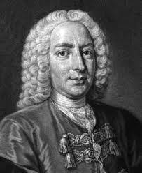
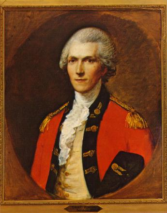
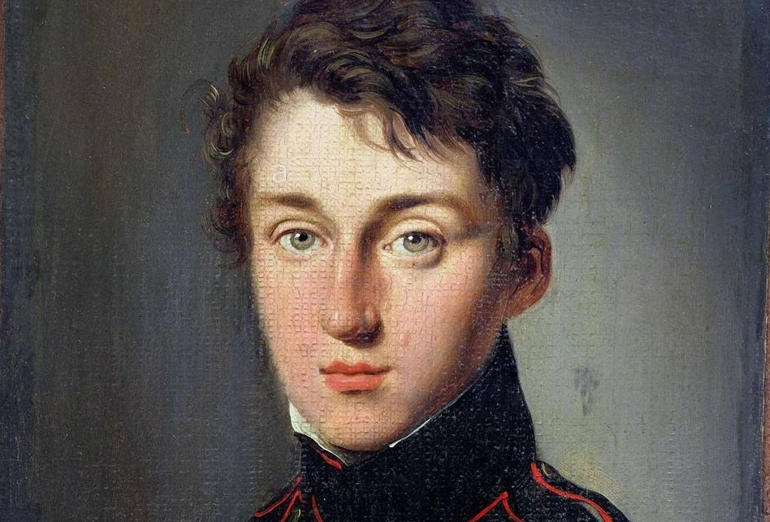
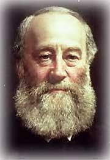
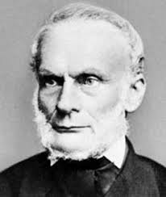
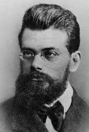
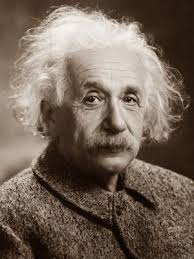
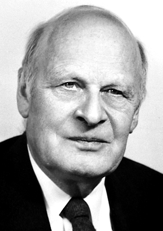
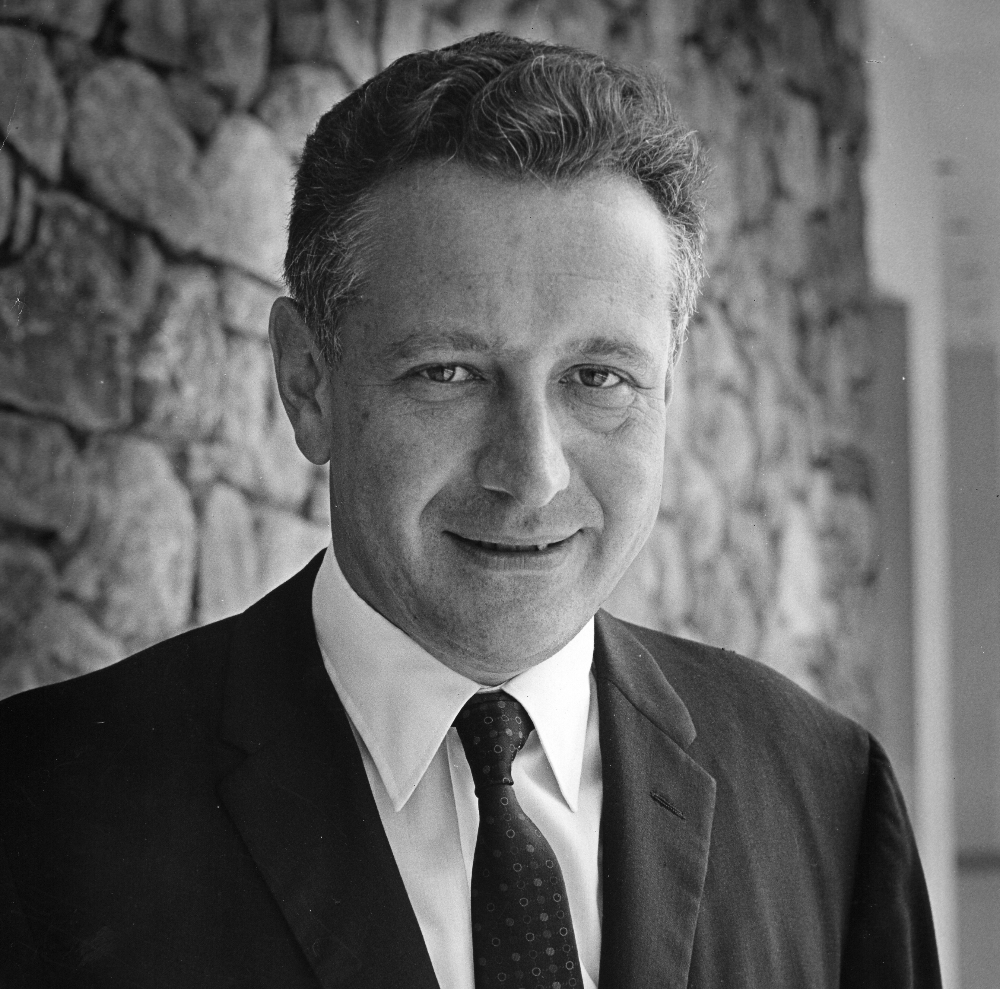

Boyle demostró que el aire tiene peso y elasticidad. Guericke inventó la bomba de vacío y los hemisferios de Magdeburgo, sentando las bases para entender la presión atmosférica y el comportamiento de los gases.

En su obra Hydrodynamica, Bernoulli conecta la presión con los impactos de partículas, mucho antes de que se aceptara la teoría atómica. Fue el primer paso hacia la interpretación microscópica del calor.

Rumford notó que el calor producido por fricción era prácticamente inagotable. Concluyó que el calor debía ser una forma de movimiento, no un fluido (calórico). Su trabajo inspiró a Joule.

Carnot establece que la eficiencia de una máquina térmica depende solo de las temperaturas entre las que opera, no del fluido. Introduce el ciclo de Carnot y sienta las bases de la segunda ley.

Con su famoso experimento de la rueda de paletas, Joule midió el aumento de temperatura del agua al realizar trabajo. Demostró la equivalencia entre calor y trabajo, confirmando la primera ley de la termodinámica.

Clausius introduce el concepto de entropía y enuncia: "La entropía del universo tiende a un máximo". Kelvin establece la escala absoluta de temperatura y el cero absoluto.

Boltzmann relaciona la entropía con el desorden molecular (S = k·ln W). Maxwell desarrolla la teoría cinética de gases. Ambos unifican la termodinámica con la mecánica y la probabilidad.

Einstein publica su teoría sobre el movimiento browniano, proporcionando evidencia empírica de la teoría cinético-molecular. Esto consolidó la interpretación atómica del calor y la energía.

Onsager (Nobel 1968) establece relaciones para procesos irreversibles. Prigogine (Nobel 1977) introduce las estructuras disipativas, aplicando la termodinámica a sistemas vivos y complejos.

Hoy la termodinámica se extiende al régimen cuántico, explorando límites fundamentales de la computación, la eficiencia energética a nanoescala y la conexión con la teoría de la información (principio de Landauer).